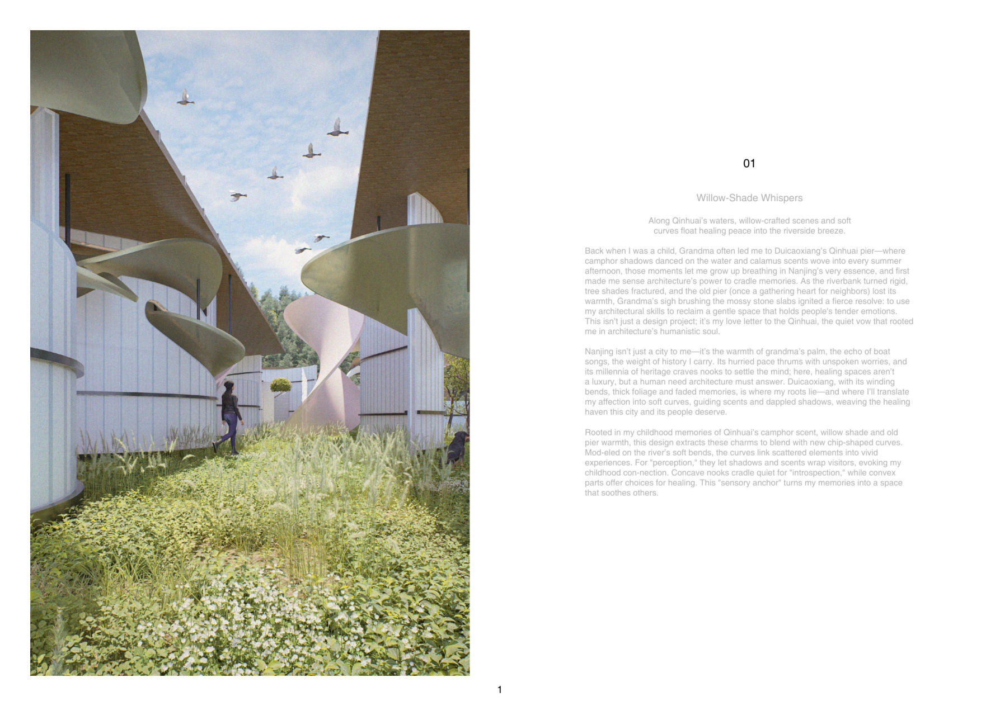
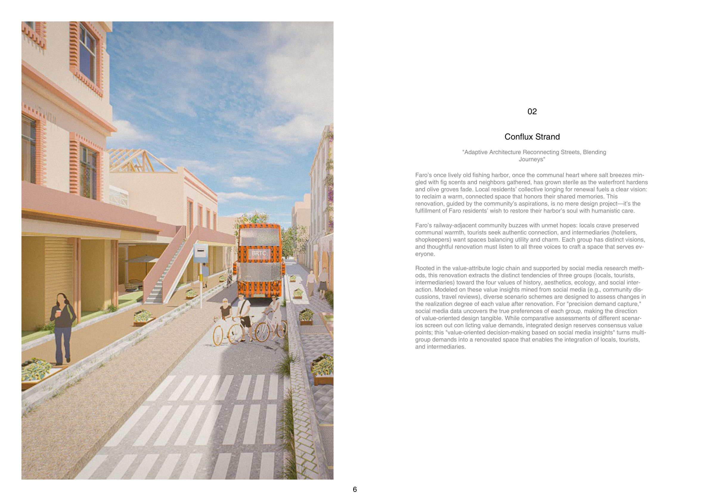
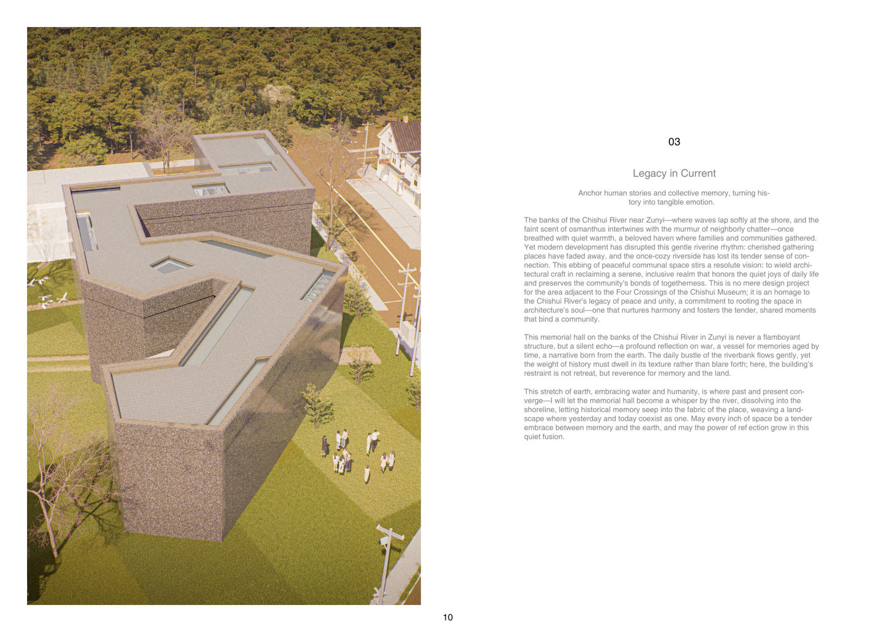

( 01 )
Selected Works

01 · Nanjing, China
Willow-Shade Whispers
A healing riverside space along the Qinhuai, woven from childhood memory, scent paths and soft curves.

02 · Faro, Portugal
Conflux Strand
Adaptive renovation of an old harbour, reconnecting streets and blending the journeys of locals and visitors.

03 · Zunyi, China
Legacy in Current
A quiet memorial hall by the Chishui River, turning history and collective memory into tangible emotion.

04 · Wuhan, China
Embrace the Murmur of Childhood
A kindergarten by Nanhu Lake, a courtyard tenderly woven by embrace, where innocent susurrations bloom.

05 · Guangzhou, China
The Topology Engine
Territorial spatial planning through topological regeneration at Guangzhou's industrial-heritage riverside.

06 · Wuhan, China
Communis Facens
Residents-led, minimal-intervention renovation: a vertical green ascent in a tight urban community.
( 02 )
About
I am an architect who believes the gentlest spaces matter most. My work grows from memory and human stories — healing riverbanks, community life, children's growth — and translates them into calm, precise architecture and urban design.
Education
B.Arch — Wuhan University of Technology · GPA 3.449
M.S. in Advanced Urban Design (MSAUD) — Cornell University · currently pursuing
Software
- Rhino
- Revit
- ArchiCAD
- Grasshopper
- AutoCAD
- Adobe Suite
Certificates & Focus
- Sketch · Level 7
- Calligraphy · Level 10
- Guitar · Level 4
- Sustainable & net-zero design
- Community-care architecture
- Qualitative research methods